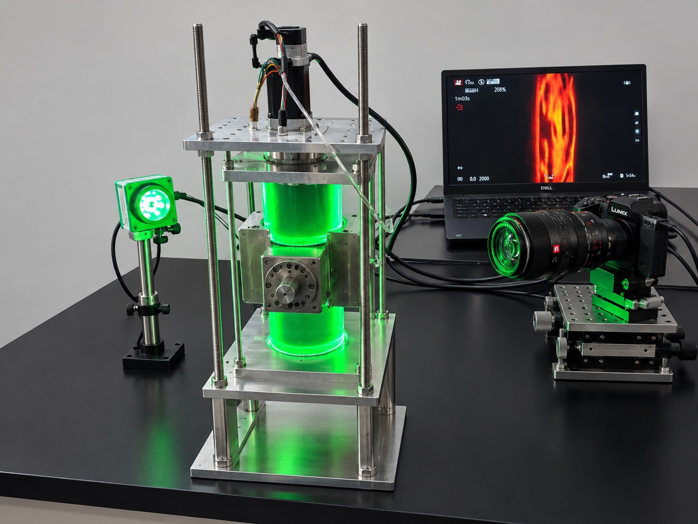
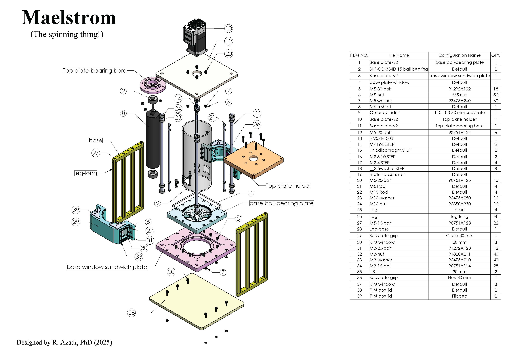

Taylor–Couette Flow & Lubricant-Depletion Dynamics

I designed and commissioned an optically accessible Taylor–Couette system to investigate how lubricant-infused surfaces degrade under controlled shear. Refractive-index matching between the working fluid and acrylic components, together with an external fluid-filled viewing box, suppresses optical distortion and enables direct imaging of lubricant depletion from the rotating textured surface.
Lubricant-infused surfaces can reduce interfacial friction, but their performance depends on whether the infused liquid remains trapped within the surface texture under sustained flow. I developed an optically accessible Taylor–Couette system to visualise and quantify lubricant depletion while independently controlling the applied shear, experimental duration, working-fluid properties, and surface condition.
The test surface is flush-mounted on the outer cylinder surface and exposed to a controlled annular flow. This geometry provides a well-defined and reproducible shear environment, allowing lubricant loss to be studied from its initial redistribution through progressive depletion and eventual surface failure. By varying the rotation rate, lubricant properties, and operating time, the system can reveal how hydrodynamic forcing governs lubricant displacement and retention.
Engineering Challenge
Lubricant depletion had to be visualised through the curved acrylic wall of a Taylor–Couette system while the textured samples remained flush-mounted in the stationary outer cylinder. Curved solid-liquid interfaces produced refraction and lensing that distorted the apparent lubricant distribution. I addressed this by formulating a refractive-index-matched working fluid and enclosing the cylindrical test section within a fluid-filled rectangular viewing box, creating a flat external optical interface for clearer, less distorted imaging.
Measurement Principle
Lubricant-infused samples are flush-mounted in the stationary outer cylinder and exposed to controlled shear generated by rotation of the inner cylinder. Time-resolved optical imaging captures lubricant redistribution, the formation and propagation of depleted regions, and changes in retained lubricant coverage. Comparing these dynamics across rotation rates, exposure times, surface textures and lubricant conditions reveals how hydrodynamic forcing governs lubricant retention and functional lifetime.
Key Design Features
- Controlled Taylor–Couette shear flow
- Samples flush-mounted in the stationary outer cylinder
- Interchangeable textured specimens
- Refractive-index-matched working fluid
- Fluid-filled rectangular optical viewing box
- Time-resolved imaging of lubricant redistribution and depletion
- Long-duration durability testing
- Quantitative depleted-area and lubricant-coverage analysis
- Experimental validation for two-phase depletion models
Optical design and refractive-index matching
Direct imaging through a curved acrylic cylinder presents a substantial challenge. Refraction at the curved solid-liquid interfaces can distort the apparent position, shape, and intensity of the lubricant structures, reducing the accuracy of image-based measurements. To minimise these effects, I selected a working fluid whose refractive index was matched as closely as practicable to that of the acrylic components. I also enclosed the cylindrical test section within a rectangular, fluid-filled acrylic viewing box. The outer box replaces the strongly curved final optical interface with a flat viewing surface, further reducing lensing and geometric distortion. Together, refractive-index matching and the external viewing box provide a clearer optical path through the apparatus and enable high-resolution imaging close to the rotating surface. This arrangement supports quantitative tracking of lubricant redistribution, depletion fronts, retained lubricant volume, and local failure patterns over time.
SolidWorks CAD files
Download the 3D assembly (*.SLDASM), component parts (*.SLDPRT) and STEP files here.
